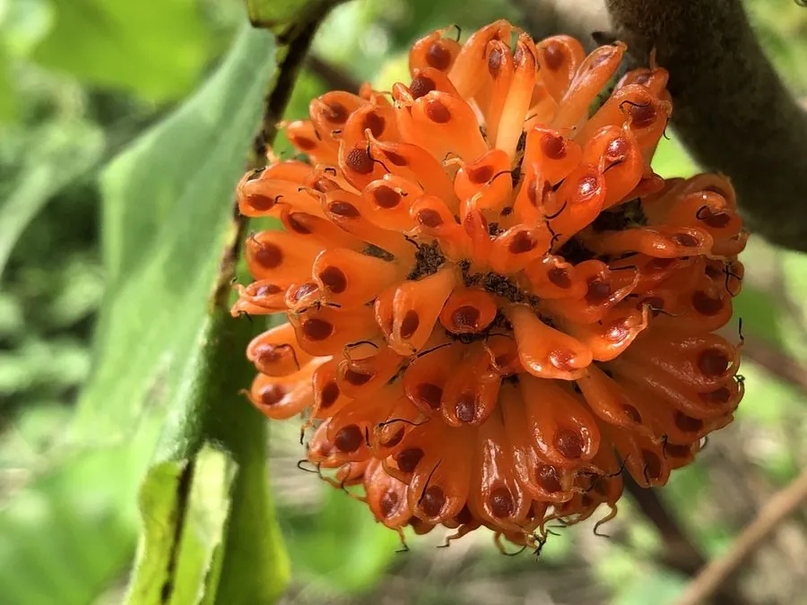

乔木 · 植物界
构树 Broussonetia papyrifera

中国常见的落叶乔木，叶形多变、树皮纤维可造纸，果实橙红可食，生长极快，是适应性极强的乡土树种。
- 分类
- 门被子植物门纲木兰纲目蔷薇目科桑科属构属
- 栖息环境
- 海拔 1500 米以下的村旁、路旁与荒地，适应性强
- 地理分布
- 中国南北各地，东南亚、日本也有分布
- 保护级别
- 暂无评估；中国未列入国家重点保护野生植物名录
物种志
构树为落叶乔木，高可达 16 m，树皮灰褐色、平滑，全株含白色乳汁；叶片互生，卵形至宽卵形，常 3–5 裂，边缘具粗齿，叶形变化很大，幼树上的叶片裂得更深。花期 4–5 月，雌雄异株，雄花序葇荑状下垂，雌花序球形；聚花果球形，成熟时橙红色，肉质多汁。
构树分布于中国南北各地及东南亚，喜光、耐旱、耐瘠薄，适应性强，在村旁、路旁与荒地上都能生长。树皮纤维长而坚韧，是古代造纸的重要原料，蔡伦造纸即用构树皮；木材轻软，可供薪炭与器具用；果实可食，根、皮与叶可入药。构树生长极快、萌蘖力强，是荒山绿化的先锋树种，但扩散迅速，在城市绿地中需注意控制。
形态与习性
- 株高可达 16 m，全株含乳汁
- 花期4–5 月，雌雄异株
- 果期7–9 月，聚花果橙红色
- 光照喜光，不耐长期荫蔽
- 水分耐旱，怕积水
- 主要用途树皮造纸、果实可食、根皮叶入药
趣味知识
- 构树的树皮纤维是古代造纸的重要原料，蔡伦造纸使用的就是构树皮。
- 构树的叶片形状多变，幼树上的叶片常深裂，成年树上的叶片较完整。
- 构树的聚花果成熟时橙红色、多汁，可以食用。